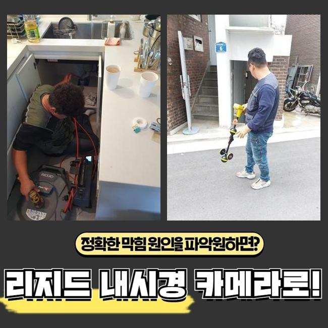
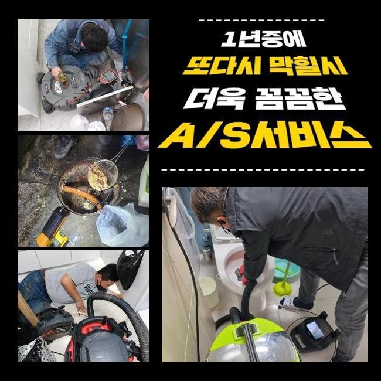
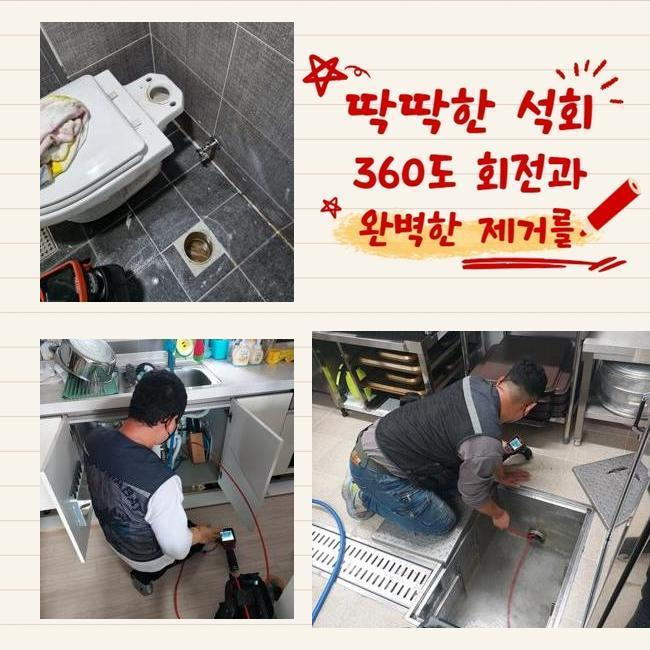
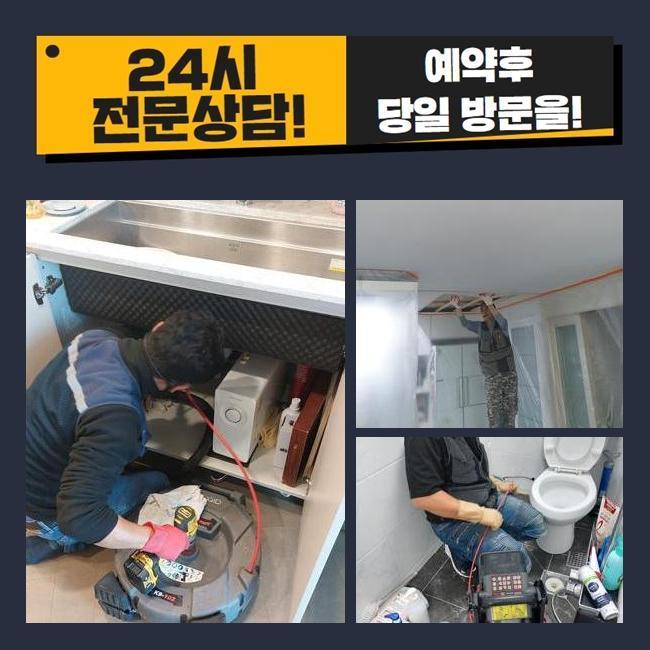
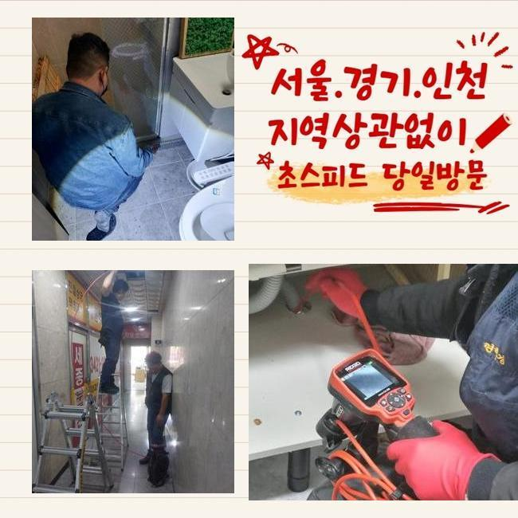
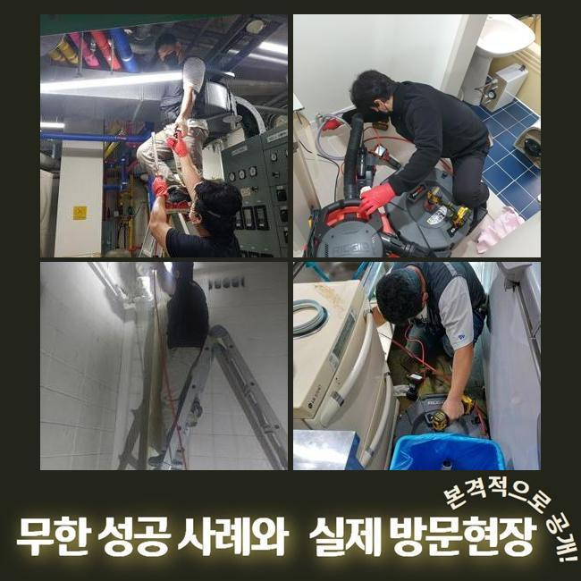
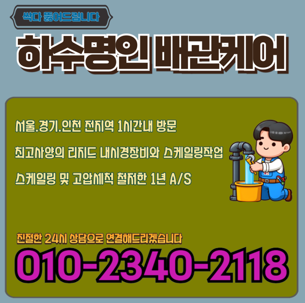

🏠 청원구 싱크대하수구청소 막힌변기 배관뚫어주는곳 하수도업체
용인 싱크대막힘 전문 시공 후기

📋 작업 개요
- 위치: 용인
- 서비스 유형: 싱크대막힘, 변기막힘, 하수구막힘, 배관막힘, 집수정막힘, 누수수리, 뚫는업체, 배관청소
- 작업 일시: 2024. 12. 28. 23:08
- 업체명: 하수구수사대 (010-5615-2118)
🔍 문제 상황
청원구 싱크대하수구청소 막힌변기 배관뚫어주는곳 하수도업체
2주전에 하수관로가 막혀 불편들을 호소하셨던 고객님에게 문의를 받게되었어요
고객분은 배수관에 대한 전문성을 띄고 계시진않았지만 본인만의 해결책을 답습한 상황이였죠
의뢰자분은 하수관을 닦아주고 막히게된 지점들을 찾으려고 관찰했지만 어디부분이 문제인건지 아는 것이 불가해 저희업체께 문의하셨던 것이였죠
현장에 방문드리니 계속적인 자가적인 조치들로 고생하셨던 것이 눈에 띄었어요
고객님 차원에서는 기조를 찾을 수 없는 사례가 많아요
해당 장소에서 배수관을 점검하니 내측엔 증세는 없었습니다
고객분은 공동배수관 등에서 까닭이 발현되었을 확률들이 높을거라 생각했죠
외측에 나무등이 자리하고 있다면 땅 밑으로 침투할수도 있고 잔재들이 빠지게될 확률들이 존재합니다
여러가지의 까닭으로 바깥쪽의 관로들이 막히게될 수 있어요

🔎 원인 분석
💡 전문가 진단: 정밀 진단 장비를 사용하여 슬러지의 고착 여부를 판명하고 타격/세척 작업을 실시했습니다.
고객분에게 지금 추정하고있는 원인들에 설명하고 바깥쪽을 점검해야한다고 안내드렸어요
의뢰인분도 이러한 내용을 듣고난 후 메인 하수 시스템 검사절차에 수락을 하셨어요
시공을 착수해주기위하여 기기의 점검도 빠트리지 않았어요
배수장애의 이유는 한두가지가 아닌데요
배수설비가 드러나있으면 이런저런 이물질 등 주변에서 유입된 여러 폐기물들이 하수관으로 축적됩니다
외측에 비소식이 있을때 바깥쪽 하수시스템들의 실태를 등한시한다면 증세규모는 장담할 수 없어요
또한, 나무의 땅 밑으로 침투되는 현장도 종종 있죠
배수관을 감싼다거나 더불어 손상케하는 문제까지 야기시킵니다
이런 문제들이 거듭되면 유수가 정체되어 부차적 문제까지 벌어지게돼요
그리고 배수관이 노후되거나 손상된 상태에서도 유수가 진행되지를 못해 막히는 사태가 발발합니다

🔧 작업 과정
기간에 따라 하수관이 약해지면 여러 폐기물들이 누적되는 기반이 만들어집니다
마지막으로서 상당수 통수오류의 주 원인들은 주기적인 관리책 실시를 신경써주지 않아서죠
때때로 소홀히 하면, 작은 잔해물이 축적되고 막히는 상태가 심해질거에요
그러므로 외측을 시기적절하게 검수하고 청소시키는게 선제적인 방법으로 괄목할만한 방법들이라 할 수 있겠습니다
이런저런 까닭들을 인지하고 선제조치를 통해 대비해주는게 우선입니다
내시경장치로 외측의 관로등의 실황을 확인했어요
내시경기기로 살폈더니 하수관의 군데군데마다 잔해와 기름으로 인하여 막혀버린것이 눈 앞에 펼쳐졌어요
이와같이 배수관이 막히면 물의 흐름들이 진행되지를 못해 누수되어버리는 사태까지 발생되므로 대응을 이행하는게 중요합니다
검수과정 중 여러 폐기물들이 축적된 스팟을 타겟하여 청소키로 결정했죠
고압분사방식을 준비하여 쎈 수압으로 관로를 구석구석 청소해주었어요
물줄기들이 이물들을 안에서부터 제거시키니 정체현상을 보이던 유수도 배출되었는데요
최초에는 고여있던 오수들이 배출됐고 여러 폐기물들이 나오게되며 집수정으로 조속히 복구되기에 이르렀습니다
물이 신속히 배출되는 모습들을 체크해보며 의뢰자께서도 해당 과정들을 관찰하셨어요
이물제거가 수행되면서 고객과도 얘기하며 잔재들이 쌓이는 까닭들을 안내하니 고객도 따로 궁금했던 내용들을 질문했어요
이것으로 의뢰인분은 관리측면의 중요성들을 인지하셨고 나중에까지 정기성을 갖춘 진단의 당위성에 대해 공감해주셨어요
마침내 작업들이 종료되고 배수관이 완전히 복구되며 여러분의 경우 통수되는 모습도 확인했습니다


✅ 작업 완료
고객에게도 결과까지 설명하고 지속적으로의 관리와 관련해 설명했죠
때때로 외부라인을 점검해주고 필요 시 전문가들의 해결들을 꾀하는게 합리적이라는 것을 설명드렸죠
이것으로 고객분에게서 고민을 해결하게되어 다행이라고 생각했답니다
고객분의 안심할 수 있는 유수에 보탬으로 다가설수있게 언제라도 저희쪽으로 전화주시기 바라요




⚠️ 베란다 누수 및 방수 관리 방법
- ✅ 비가 많이 올 때 창틀 주변이나 아래층 천장에 얼룩이 생기는지 정기적으로 확인해 보세요.
- ✅ 우수관 주변 실리콘 마감이 들뜨거나 깨진 틈새가 있는지 손상 여부를 수시로 체크하세요.
- ✅ 베란다 바닥 타일의 줄눈(메지)이 소실되면 그 틈으로 물이 침투하여 누수가 유발됩니다.
- ✅ 누수 의심 증상 발견 시 방치하면 아래층 손실이 커지므로 즉시 전문가의 진단을 받으십시오.
💡 핵심 정리
- 확실한 장비 작업(내시경 점검 및 샤프트 스케일링)으로 원인을 뿌리 뽑습니다.
- 작업 후 1년 이내에 동일한 부위 재발 시 100% 무상 A/S 서비스를 보장합니다.
- 서울 · 경기 · 인천 전 지역에 24시간 언제든 긴급 출동할 수 있도록 항시 대기 중입니다.
❓ 자주 묻는 질문 (FAQ)
🚨 용인 싱크대막힘 문제로 고민이신가요?
정확한 원인 진단과 확실한 시공으로 재발 없는 해결을 약속드립니다.
24시간 긴급 출동 | 서울 · 경기 · 인천 전지역 | 1년 내 재발 시 무상 A/S